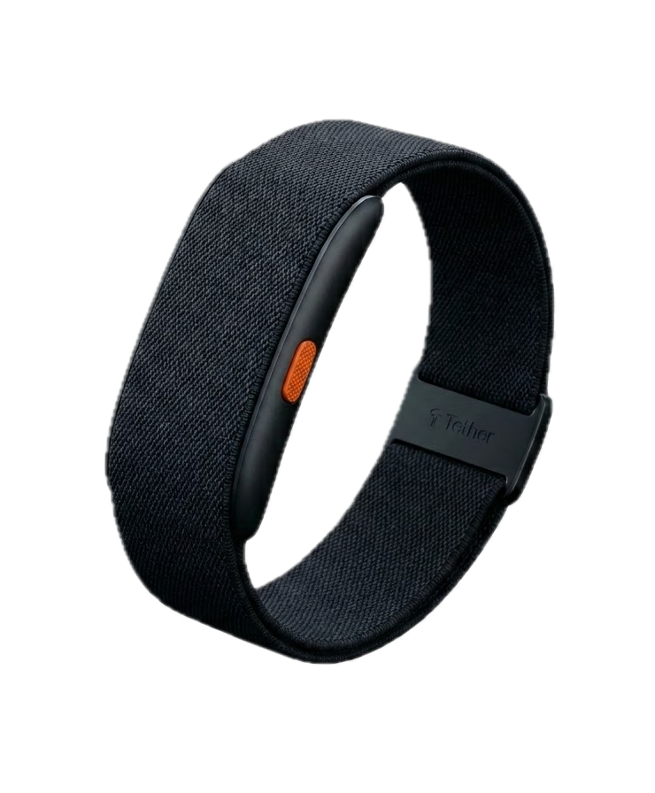

Tethered to Safety.
Total Peace of Mind.
The discreet biometric band engineered for independent aging. Continuous clinical vitals, dual-vector fall detection, and an emergency NFC passport concealed in a screenless fabric strap.
The Hidden Vulnerabilities of Independent Aging
Aging in place is every senior's wish, but sudden trauma, asymptomatic vitals collapse, and social isolation turn independent homes into silent hazard zones.
1 in 4 Seniors Fall Every Year
40% of fallen seniors cannot get up unassisted. Lying immobilized on the floor for hours leads to acute hypothermia, dehydration, muscle necrosis (rhabdomyolysis), and permanent loss of mobility before anyone discovers them.
Asymptomatic Collapse
Orthostatic blood pressure drops upon standing trigger sudden syncopal blackouts. Meanwhile, blunted elder immune systems suppress visible fever markers until urinary tract infections or pneumonia escalate into life-threatening sepsis.
Living Alone Without Help
Over 39 million seniors live in solitary residences without adult children at home. Elderly parents refuse to feel like burdens, while remote family members suffer constant dread that an emergency will occur while their loved one is alone.
Tether: Engineered for Invisible Protection
No screens. No confusing notifications. No daily charging chores. Continuous medical-grade biometric engineering discreetly concealed under soft, skin-friendly fabric that seniors actually want to wear.

Screenless Fabric
Eliminates stigma and accidental touches
7–10 Day Battery
Protects wearers through every single night
Passive 0% NFC
Instant paramedic triage without battery
IP68 Waterproof
Never taken off in showers or baths
The 7 Layers of Protection
Why Tether engineered each defensive layer—and how it translates into autonomous protection and actionable triage for caregivers and emergency responders.
Engineered for Reliability
Discreetly concealed under soft, skin-friendly woven fabric—continuous medical-grade reliability without daily maintenance chores.
Dual-Vector Fall Sensing
6-Axis IMU paired with a micro-barometric altimeter detects sudden drops with a 30-second cancel countdown.
Passive NFC Medical ID
Passive ISO 14443 chip readable at 0% battery. First responders tap their smartphone for instant triage access.
Centered Tactile SOS
A single textured safety-orange button allows blind, tactile emergency triggering with smartphone BLE calling relay.
Clinical Telemetry
Continuous optical PPG and dual precision thermistors track resting HR, blood pressure trends, and early fever spikes.
Why Traditional Wearables Fail Seniors
Smartwatches were built for tech enthusiasts; panic pendants were built in the 1980s. Neither solves the realities of independent elder aging.
Daily Charging Anxiety
18-hour smartwatch batteries mean devices spend nights on charging docks—leaving seniors completely unprotected when 40% of falls occur.
Stigma & Screen Friction
Touchscreens cause accidental taps and confusing errors for arthritic fingers. Bulky medical alert pendants look institutional and are abandoned in drawers.
Locked Medical Data
When EMTs arrive at an emergency, critical health records, allergies, and DNR directives remain inaccessible behind passcode-locked phones.
Aging Demographics at Massive Scale
Socio-demographic shift driving exponential demand for passive, dignity-first elder safety telemetry.
Current addressable demographic in India (out of 1.48B population).
World’s fastest-compounding longevity demographic doubling into 2050.
Seniors managing independent residences without in-home family support.
Solo-occupant elder households facing acute risk during falls and syncopes.
Family Peace of Mind.
Zero Maintenance for Parents.
The Tether App lives quietly on the senior’s phone—bridging the strap’s Bluetooth connection for automated SOS emergency calls, Find My tracking, and fall relays without requiring any daily attention.
While wearers can check their own vitals anytime, most elderly parents prefer not to manage apps. That’s why Tether enables adult children and family members to passively monitor trends, receive instant drop alerts, and stay connected from anywhere.
Silent Emergency Phone Relay
Runs in the senior’s pocket to instantly trigger 911/caregiver calls and GPS coordinates when the strap button is pressed.
Multi-Parent Switcher for Family
Adult children can monitor Mom and Dad simultaneously with Outlook-style profile toggling.
Status
Dorothy (Mom)
Living Room • Bluetooth Linked
No drops detected today
Predictable Annual Protection
Hardware included. Zero daily friction. Full-year family companion coverage with continuous telemetry.
Tether Guardian
Complete protection for parents living independently.
Includes physical Tether band + full 1-year companion access
- Physical Tether Band hardware included
- 1-Year access to family companion network
- Dual-vector autonomous fall response
- Find My integration & instant GPS relay
- Tap-to-read emergency NFC triage passport
Tether Enterprise
For memory care communities and assisted living facilities.
Volume deployments with centralized care consoles
- Central nurse triage station dashboard
- Bulk band deployment & replacements
- EHR integration and clinical audit logs
- Automated room-level wander & fall dispatch
Join the Waitlist & Request Pitch Deck
We are currently opening conversations with early angel investors and onboarding families to our priority waitlist.
You're on the Priority List!
Thank you for connecting with Tether. Your details have been securely recorded, and our founding team will follow up directly with pitch deck access and early onboarding details.
Seed Stage Pitch Deck • Confidential
Tether Health Inc. • tether.health
Direct contact: Founding Team / Reuben